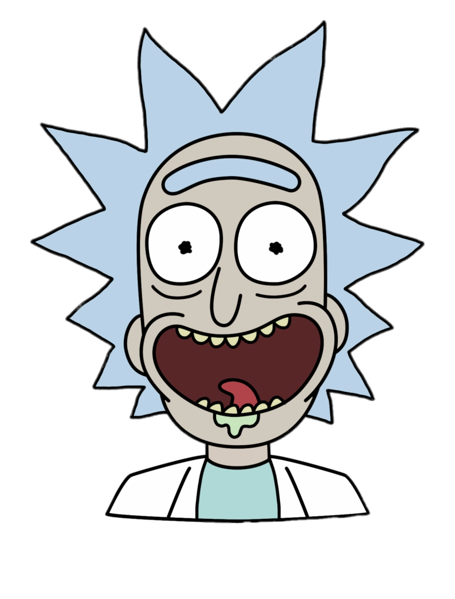
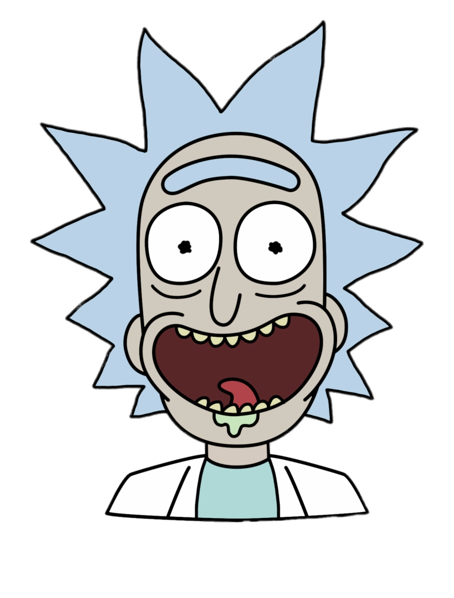

Rick é um cientista brilhante e está sempre em busca de grandes experiências, indo parar até em universos paralelos. Ele é bem esquentado e sempre sobra para seu neto, Morty, que o acompanha nessas expedições.” Criada por Justin Roiland e Dan Harmon, Rick and Morty é uma série animada de comédia que mostra as aventuras interdimensionais de Rick, a mente mais brilhante da galáxia, e seu neto Morty. A série conta com cinco temporadas já lançadas e a 6° tem a data de estréia anunciada para 05/09/2022.
 
